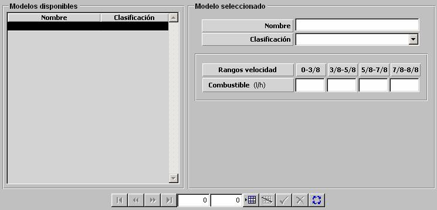

Consumo de Combustible de Superficies y Submarinos

Los modelos de Consumo de Combustible de Superficies y Submarinos se parametrizan mediante una tabla en la que se introducen los valores de Consumo de Combustible para los siguientes rangos de velocidad de la unidad, expresados en fracciones de la velocidad máxima de la unidad:
0 – 3/8, 3/8 – 5/8, 5/8 – 7/8, 7/8 – 1
Esta tabla es aplicable para el cálculo del consumo de combustible para unidades de Superficie y para Submarinos que naveguen con combustible normal y no estén cargando Baterías.
Descripción de los parámetros:
Combustible: Cantidad de combustible consumido por la unidad cada hora, según el rango de velocidad en cada momento.
Unidades: litros / hora
Rango: 0 - 99999
Ejemplo:
Si Combustible = 0 ⇒ no consume combustible.
Si Combustible = 99999 ⇒ consumo máximo.